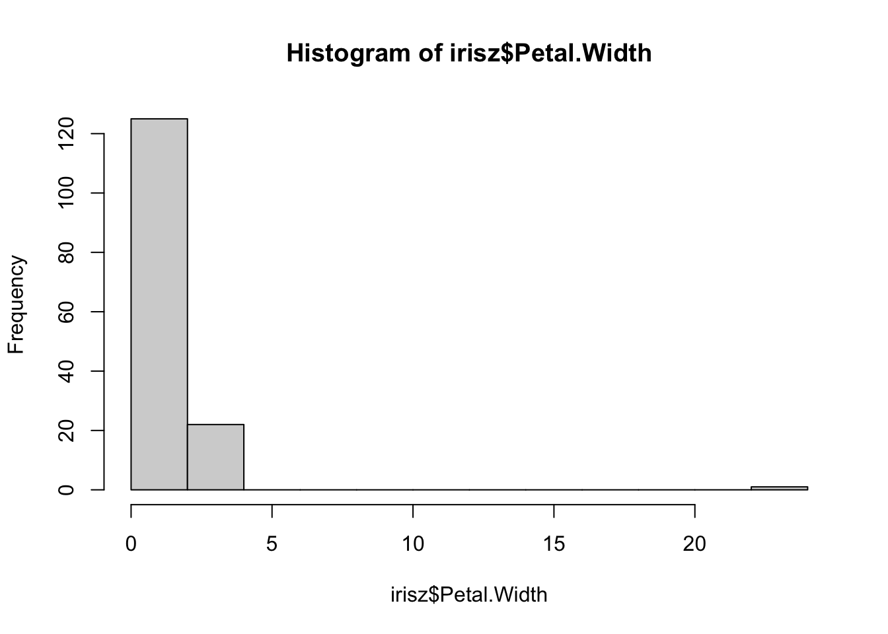

3 Day 4 - tidyverse and visualizations
Learning Goals:
By the end of today’s session, students will be able to:
- Read in and process data starting from a local saved file
- Transform, scale, filter, and convert values within a dataset
- Descibe the roles of data, aesthetics, and geoms in ggplot functions.
- Choose the correct aesthetics and alter the geom parameters for a scatter plot, histogram, or box plot.
- Layer multiple geometries in a single plot.
- Customize plot scales, titles, subtitles, themes, fonts, layout, and orientation.
- Apply a facet to a plot.
- Save a ggplot to a file.
3.1 Reading and processing data
find a file-reading function, know of a few use read.csv to read a file and save it as a variable, and tune some arguments
## Sepal.Length Sepal.Width Petal.Length Petal.Width Species Location
## 1 5.1 3.5 1.4 0.2 setosa Korea
## 2 4.9 3 1.4 0.2 setosa China
## 3 4.7 3.2 1.3 0.2 setosa Korea
## 4 4.6 3.1 1.5 0.2 setosa China
## 5 5 3.6 1.4 0.2 setosa China
## 6 5.4 1.7 0.4 setosa Canada## [1] "setosa" "setosa" "setosa" "setosa" "setosa" "setosa"Settings for read.csv
## [1] setosa setosa setosa setosa setosa setosa
## Levels: setosa versicolor virginica## [1] Korea China Korea China China Canada
## Levels: Canada China Japan Korea Russia USAirisz <- read.csv("data/iris.csv", col.names = c("sep_len", "sep_wid", "pet_len", "pet_wid", "species", "loc"))
head(irisz)## sep_len sep_wid pet_len pet_wid species loc
## 1 5.1 3.5 1.4 0.2 setosa Korea
## 2 4.9 3 1.4 0.2 setosa China
## 3 4.7 3.2 1.3 0.2 setosa Korea
## 4 4.6 3.1 1.5 0.2 setosa China
## 5 5 3.6 1.4 0.2 setosa China
## 6 5.4 1.7 0.4 setosa Canadaimportant to preview data and look for issues, and have some strategies/functions to do this
Examining Data
## 'data.frame': 150 obs. of 6 variables:
## $ sep_len: chr "5.1" "4.9" "4.7" "4.6" ...
## $ sep_wid: chr "3.5" "3" "3.2" "3.1" ...
## $ pet_len: chr "1.4" "1.4" "1.3" "1.5" ...
## $ pet_wid: chr "0.2" "0.2" "0.2" "0.2" ...
## $ species: chr "setosa" "setosa" "setosa" "setosa" ...
## $ loc : chr "Korea" "China" "Korea" "China" ...## sep_len sep_wid pet_len pet_wid
## Length:150 Length:150 Length:150 Length:150
## Class :character Class :character Class :character Class :character
## Mode :character Mode :character Mode :character Mode :character
## species loc
## Length:150 Length:150
## Class :character Class :character
## Mode :character Mode :character## [1] "5.1" "4.9" "4.7" "4.6" "5" "5.4" "4.4" "4.8" "4.3" "5.8" "5.7" "5.2"
## [13] "5.5" "4.5" "n/a" "5.3" "7" "6.4" "6.9" "6.5" "6.3" "6.6" "5.9" "6"
## [25] "6.1" "5.6" "6.7" "6.2" "6.8" "7.1" "7.6" " " "7.2" "7.7" "7.4" "7.9"what NAs are, some strategies to deal with these
Handling Missing Data
## Sepal.Length Sepal.Width Petal.Length Petal.Width Species Location
## 1 5.1 3.5 1.4 0.2 setosa Korea
## 2 4.9 3.0 1.4 0.2 setosa China
## 3 4.7 3.2 1.3 0.2 setosa Korea
## 4 4.6 3.1 1.5 0.2 setosa China
## 5 5.0 3.6 1.4 0.2 setosa China
## 6 5.4 NA 1.7 0.4 setosa Canada## 'data.frame': 150 obs. of 6 variables:
## $ Sepal.Length: num 5.1 4.9 4.7 4.6 5 5.4 4.6 5 4.4 4.9 ...
## $ Sepal.Width : num 3.5 3 3.2 3.1 3.6 NA 3.4 3.4 2.9 3.1 ...
## $ Petal.Length: num 1.4 1.4 1.3 1.5 1.4 1.7 1.4 1.5 1.4 1.5 ...
## $ Petal.Width : num 0.2 0.2 0.2 0.2 0.2 0.4 0.3 0.2 0.2 0.1 ...
## $ Species : Factor w/ 3 levels "setosa","versicolor",..: 1 1 1 1 1 1 1 NA 1 1 ...
## $ Location : Factor w/ 6 levels "Canada","China",..: 4 2 4 2 2 1 2 2 5 3 ...## Sepal.Length Sepal.Width Petal.Length Petal.Width
## Min. :4.300 Min. :0.350 Min. :1.000 Min. : 0.100
## 1st Qu.:5.100 1st Qu.:2.800 1st Qu.:1.550 1st Qu.: 0.300
## Median :5.800 Median :3.000 Median :4.300 Median : 1.300
## Mean :5.839 Mean :3.028 Mean :3.752 Mean : 1.331
## 3rd Qu.:6.400 3rd Qu.:3.300 3rd Qu.:5.100 3rd Qu.: 1.800
## Max. :7.900 Max. :4.400 Max. :6.900 Max. :23.000
## NA's :2 NA's :3 NA's :3 NA's :2
## Species Location
## setosa :49 Canada:35
## versicolor:50 China : 6
## virginica :49 Japan :11
## NA's : 2 Korea :10
## Russia:11
## USA :63
## NA's :14Looking for anamolous data



how to filter entries in a data.frame
how to cast/transform value Types how to scale/normalize values
## [1] 5.1 4.9 4.7 4.6 5.0 5.4## [,1]
## [1,] -1.4863011
## [2,] -1.1560120
## [3,] -0.8257228
## [4,] -0.4954337
## [5,] -0.1651446
## [6,] 0.1651446
## [7,] 0.4954337
## [8,] 0.8257228
## [9,] 1.1560120
## [10,] 1.4863011
## attr(,"scaled:center")
## [1] 5.5
## attr(,"scaled:scale")
## [1] 3.02765## [,1]
## [1,] 0.1528942
## [2,] 0.3057883
## [3,] 0.4586825
## [4,] 0.6115766
## [5,] 0.7644708
## [6,] 0.9173649
## [7,] 1.0702591
## [8,] 1.2231533
## [9,] 1.3760474
## [10,] 1.5289416
## attr(,"scaled:scale")
## [1] 6.540472## [,1]
## [1,] -4.5
## [2,] -3.5
## [3,] -2.5
## [4,] -1.5
## [5,] -0.5
## [6,] 0.5
## [7,] 1.5
## [8,] 2.5
## [9,] 3.5
## [10,] 4.5
## attr(,"scaled:center")
## [1] 5.5## [,1]
## [1,] -0.8992245
## [2,] -1.1425248
## [3,] -1.3858250
## [4,] -1.5074751
## [5,] -1.0208747
## [6,] -0.5342742## [1] 0.0000000 0.1111111 0.2222222 0.3333333 0.4444444 0.5555556 0.6666667
## [8] 0.7777778 0.8888889 1.00000003.2 Using tidyverse
- When it comes to manipulating data frames (creating new columns, filtering, etc.) - tidyverse is your friend!
- Scholars will understand the complex socio-technical context of tidyverse, ie that it’s not base R but oh boy it’s popular and well supported by a company - but not base R
- Scholars know that tidyverse/dplyr takes a more database-like approach to moving data tables around
- Scholars can identify and predict what a magrittr pipe does
- Scholars can pipe some stuff between functions, and write that out in a script
- Scholars can filter data tables, select and rename columns
- Scholars can mutate columns
- Scholars understand what group_by is doing
- Scholars can use group_by to summarise variables
3.3 Using tidyverse
- When it comes to manipulating data frames (creating new columns, filtering, etc.) - tidyverse is your friend!
- Scholars will understand the complex socio-technical context of tidyverse, ie that it’s not base R but oh boy it’s popular and well supported by a company - but not base R
- Scholars know that tidyverse/dplyr takes a more database-like approach to moving data tables around
- Scholars can identify and predict what a magrittr pipe does
- Scholars can pipe some stuff between functions, and write that out in a script
- Scholars can filter data tables, select and rename columns
- Scholars can mutate columns
- Scholars understand what group_by is doing
- Scholars can use group_by to summarise variables
3.4 Making plots with ggplot2
We will primarily be working in ggplot2 as it has the greatest degree of customization for visualization and offers many additional features over the basic plotting in R.
3.4.1 Getting started with a ggplot
Most ggplot calls to create a figure take the following form (you can read more using help(ggplot)):
ggplot(data = <DATA>, mapping = aes(<MAPPINGS>)) + <GEOM_FUNCTION>()
We will practice using our mammalian sleep dataset. You can look up more info about this dataset using the help function and the dataset name, msleep.
## # A tibble: 6 x 11
## name genus vore order conservation sleep_total sleep_rem sleep_cycle awake
## <chr> <chr> <chr> <chr> <chr> <dbl> <dbl> <dbl> <dbl>
## 1 Cheetah Acin… carni Carn… lc 12.1 NA NA 11.9
## 2 Owl mo… Aotus omni Prim… <NA> 17 1.8 NA 7
## 3 Mounta… Aplo… herbi Rode… nt 14.4 2.4 NA 9.6
## 4 Greate… Blar… omni Sori… lc 14.9 2.3 0.133 9.1
## 5 Cow Bos herbi Arti… domesticated 4 0.7 0.667 20
## 6 Three-… Brad… herbi Pilo… <NA> 14.4 2.2 0.767 9.6
## # … with 2 more variables: brainwt <dbl>, bodywt <dbl>You will first use the ggplot() function and bind the plot to a specific data frame using the data argument.
ggplot(data = msleep)
You will next need to define a mapping (using the aesthetic or aes function), by selecting the variables to be plotted and specifying how to present them in the graph, e.g. as x/y positions or characteristics such as size, shape, color, etc.
ggplot(data = msleep, aes(x = brainwt, y = sleep_rem))
You can then add “geoms” or graphical representations of the data in the plot (points, lines, bars). ggplot2 offers many different geoms including:
geom_point()for scatter plots, dot plots, etc.geom_boxplot()for, well, boxplots!geom_line()for trend lines, time series, etc.
To add a geom to the plot use the + operator. To plot using two continuous variables, we will use geom_point() first. To save your work-in-progress, you can assign the plot to a variable.
First we establish our coordinate system.
We can now draw the plot as a scatterplot with points to represent each mammal’s measurements from the msleep dataset.
## Warning: Removed 35 rows containing missing values (geom_point).
You might notice that all of the points are squished against the y-axis since many of the mammals in this dataset have low brain weights.
## Min. 1st Qu. Median Mean 3rd Qu. Max. NA's
## 0.00014 0.00290 0.01240 0.28158 0.12550 5.71200 27As you can see with the summary function, the minimum and median values are very low, but there are a few mammals with high brainwt as you can see by the much larger maximum value in this vector.
To make more useful plots, we can transform this value using log-scaling. While we will have to note that the new values do not exactly match the real-world measurements anymore, patterns we see (i.e. something that correlates with higher brain weights) will still hold true.
msleep2 <- msleep %>% mutate(brainwt_log = log(brainwt))
ggplot(msleep2, aes(x = brainwt_log, y = sleep_rem)) + geom_point()## Warning: Removed 35 rows containing missing values (geom_point).
Here we use the mutate function to make a new variable called brainwt_log in our dataset (technically a new dataset copy that we have saved as msleep2). Plotting this variable as our x variable (i.e. independent variable), makes it easier to look for patterns.
3.4.2 Changing plot aesthetics
We can modify the appearance of the plot in two ways: either uniformly changing the appearance or having the appearance vary depending on information present in our data.
Let’s explore how to modify our plots uniformly. We can change aspects of the points we plot such as transparency (“alpha”) and color by supplying them as arguments in the geom_point function.
ggplot(data = msleep2, aes(x = brainwt_log, y = sleep_rem)) +
geom_point(alpha = 0.5, color = "blue")## Warning: Removed 35 rows containing missing values (geom_point).
Here we have made the plots semi-transparent and colored blue. You can try varying these values (e.g. change blue to a different color). You can also supply other arguments such as shape to use something other than a dot.
However, it is also possible to scale the color of the points by some variable present in the data. This approach means we can create a scatterplot that conveys more than just two variables’ worth of information (x-axis and y-axis) by having the color reflect a third variable.
To do this, we specify the color inside the aesthetic mapping aes within the initial ggplot function. Same as how we told R to use a specific column by name for x or y coordinates, we specify which column to use for color.
## Warning: Removed 35 rows containing missing values (geom_point).
This plot conveys not only the relationship between brainwt_log and sleep_rem, but each plot representing a different mammal now conveys what the feeding behavior of that mammal is.
When generating visualizations, it is important to annotate the figure with meaningful labels on the axes to make them accessible for the viewer. For that, we can use the labs function.
ggplot(msleep2, aes(x = brainwt_log, y = sleep_rem, color = vore)) +
geom_point() +
labs(x = "Brain Weight (log)",
y = "Duration of REM Sleep",
color = "Feeding Behavior")## Warning: Removed 35 rows containing missing values (geom_point).
3.4.3 Exploring simple plots
Let’s consider how we make other plots besides a scatterplot.
Scatterplots are a great way to look at two quantitative (numerical) values at the same time to observe patterns (i.e. correlations) between the variables or to identify interesting outliers.
However, other plots may be more useful to look at differing numbers of variables (i.e. one quantitative variable) or different types of variables (i.e. qualitative or categorical data). Here, we discuss two types of single variable plots that look at either a quantitative variable (histogram) or a categorical variable (barplot).
We can create histograms in ggplot2 that are more aesthetically pleasing than the default hist function. This shows the distribution of one quantitative variable.

We can look at how many individuals in the dataset fall into each category, such as how many mammals have each kind of feeding behavior.

As you can see where we map the aesthetic, we only tell the ggplot function to refer to a single column in our dataset for our x-axis.
3.4.4 Visualizing between groups
Let’s return to iris dataset to explore how we can visualize differences between groups/categories. These groups are often represented in our data as a factor.
We can look at how the distributions of Sepal.Length differ depending on which species each iris belongs to. One plot that can do this easily is the geom_boxplot function.

By adding a different parameter to fill in the aes we define throgh the ggplot function, we can separate out histograms according to different groupings. Here, we use Species to determine the color of the fill.

While we can sort of see the trends on this plot, it may be helpful to separate out each histogram for each individual species. There is an easy way to do this in ggplot2 using facetting or the facet_wrap function. This function splits the figure into separate panel where the data has been filtered by the category (i.e. Species).
ggplot(iris, aes(x = Sepal.Length, fill = Species)) +
geom_histogram(bins = 10) +
facet_wrap( ~ Species)
This matches what we already saw in the boxplot, showing that there are different sepal lengths depending on which iris species we look at. We will explore in the next section how we know if these differences are significant.
3.4.5 Generating heatmaps
Heatmaps are a useful way to show the values of multiple samples across many measurements. You can visualize a heatmap by thinking of your dataframe, this tabular data, if it had each cell colorcoded based on how high or low the value is.
The base R heatmap function meets many needs while the ggplot2 equivalent (geom_tile) can be confusing so we will recommend that you not use ggplot2 for heatmaps.
Let’s go back to msleep dataset to visualize trends between the different measurements taken on each mammal. We will first create a simplified dataset from msleep where we take the log value of both brainwt and bodywt.
## [,1] [,2]
## [1,] NA 3.9120230
## [2,] -4.1669153 -0.7339692
## [3,] NA 0.3001046
## [4,] -8.1456296 -3.9633163
## [5,] -0.8603831 6.3969297
## [6,] NA 1.3480731Next, we feed these numeric values into the heatmap function along with some arguments that specify settings for displaying the figure. We use labCol to specify how to label these columns and cexCol to control the text size of these labels. We set labRow to be the names of each species from the msleep dataset.

This first heatmap will look strange because it colors each box by its magnitude, but body weight of a mammal is always greater than its brain weight. We want to scale within each column so that the depth of the color reflects whether the mammal has a high brain weight or high body weight relative to the other mammals.
heatmap(temp.data, scale = "col", labRow = msleep$name, labCol = c("brainwt", "bodywt"), cexCol = 1)
Using the scale argument which we set to "col", now the color of the columns is more meaningful. For example, it makes sense that the measurements taken on an Asian elephant are much higher than those from a mole rat, so the color of those cells is deeper.
Let’s add some more data to our heatmap visualization.
temp.data2 <- cbind(temp.data, msleep$sleep_total, msleep$sleep_rem)
heatmap(temp.data2, scale = "col", labRow = msleep$name,
labCol = c("brainwt", "bodywt", "total_sleep", "rem_sleep"), cexCol = 1)
You may have noticed the weird diagrams along the top and left hand side of this heatmap. These strange line diagrams are trees that show how our samples cluster together. Mammals that have similar patterns of values across these four measurements are placed near each other in the diagram.
3.5 Making scientific figures
Making plots can be a great way to develop an intuition for your dataset, though to derive and communicate scientific insights, we need to have an idea of the uncertainty in our interpretations.
Uncertainty describes ideas such as: are the values between two groups different enough, that it is unlikely that the differences are due to chance? Is the correlation between these variables strong enough that one can predict the other, with some level of confidence? How statistically significant are the patterns we see?
3.5.1 Plotting error bars
When we compare measurements taken from two samples (i.e. two groups), we might want to see if the two groups have very different values for that specific measurement. If we have multiple observations within each group, we can take a summary statistic such as the mean or median and plot those against each other.

For example, here we have asked our geom_bar function to plot a summary, specifically the mean of each group, instead of plotting identity which usually means the value as is. Looking at this figure, we can’t guess if the groups are significantly different without an idea of the uncertainty in our measurements through something like error bars.
Here is the convention for plotting error bars in ggplot2, as you can see it is just another kind of geom that we can add to our plot:
ggplot(data = <SUMMARY DATA>, mapping = aes(<SUMMARY MAPPINGS>) + geom_bar(stat = "identity") + geom_errorbar(aes(<ERROR MAPPINGS>))
This method is straightforward, but you need to have pre-calculated the summary statistic for each group and the amount of error (i.e. standard error) from your data. That “aggregated” dataframe becomes the data that you provide to ggplot, instead of the original dataset.
## # A tibble: 5 x 4
## vore y ymin ymax
## <chr> <dbl> <dbl> <dbl>
## 1 carni 13.6 12.6 14.7
## 2 herbi 14.5 13.6 15.4
## 3 insecti 9.06 6.41 11.7
## 4 omni 13.1 12.4 13.7
## 5 <NA> 13.8 12.7 14.9What does mean_se do? We can check.
This function returns three values, y, ymin, and ymax which correspond to the mean, the mean minus one standard error, and the mean plus one standard error. The mean value will be the height of each bar on the barplot, while ymin corresponds to the bottom of the error bar and ymax to the top of the error bar.
Let’s first plot the height of the bars using this new feeding.data dataset and mapping y to our new y column generated from the mean_se function.

Here we create the same plot as before from this aggregated dataset, just showing the mean value in each group.
ggplot(feeding.data, aes(x = vore, y = y)) +
geom_bar(stat = "identity") +
geom_errorbar(aes(ymin = ymin, ymax = ymax),
width = 0.2)
Now we add the error bars, mapping the ymin and ymax values to the arguments that happen to have the same name in the geom_errorbar function. We add in the width setting just for aesthetics.
3.5.2 Showing trends in data
Lots of these different figures summarize or aggregate the data. We may want to display the data with the individual points, but still show the overall trend across the data. Some good plots that do this are geom_density_2d which provides a contour plot.
Let’s check out the trend in our msleep data between body weight and brain weight. We will create a new column where we take the log value of body weight, like we did with brain weight.
msleep3 <- msleep2 %>% mutate(bodywt_log = log(bodywt))
ggplot(data = msleep3, mapping = aes(x = brainwt_log, y = bodywt_log)) +
geom_density_2d() +
geom_point()
As you can see the density of points almost look like they fit a line. As brain weight increases then body weight increases, or vice versa. We can add a trendline to this plot with the geom_smooth function.
my.plot <- ggplot(msleep3, aes(x = brainwt_log, y = bodywt_log)) +
geom_point(alpha = 0.5) +
geom_smooth()
my.plot## `geom_smooth()` using method = 'loess' and formula 'y ~ x'
We can also do this with trendlines that summarize only certain subsets of the data, such as those that belong to a specific category. We will flip back to our iris dataset to look at how sepal length compares to sepal width between different species of iris.
ggplot(data = iris, mapping = aes(x = Sepal.Length, y = Sepal.Width)) +
geom_point() +
geom_smooth(aes(color = Species)) ## `geom_smooth()` using method = 'loess' and formula 'y ~ x'
We create a seaprate trendline for each by specifiying the aes with color mapping to Species within the geom_smooth function.
The above plot may make it hard to see the data that is contributing to each trend line. Using facet_wrap again, we can split the figure into separate panel where the data has been filtered by the category (i.e. species).
ggplot(data = iris, mapping = aes(x = Sepal.Length, y = Sepal.Width)) +
geom_point() +
geom_smooth(aes(color = Species)) +
facet_wrap( ~ Species)## `geom_smooth()` using method = 'loess' and formula 'y ~ x'
Now it is clear that there is a positive correlation (as one goes up, the other goes up) in each species of iris, but some species have a sharper upward trend than others.
3.5.3 Saving figures locally
As you produce analysis in your research, you may want to create high-quality images of your figures to then use in presentations or publications. There are two easy ways to save images as an individual file on your computer,
The first method uses ggsave to save the most recent ggplot figure you generated.
ggplot(msleep2, aes(x = brainwt_log, y = sleep_rem)) + geom_point() +
geom_smooth(method = "lm")
ggsave("plot.png", width = 5, height = 5)This function will save the figure just produced by this code wherever your directory is currently. You can check your current directory with getwd() and change with setwd(<FOLDER NAME>). You can also provide a precise file path in the new file name.
Here is an alternative method for saving your figures:
pdf("plot.pdf") # creates the file
# png() also works if you want a different file format
ggplot(msleep2, aes(x = brainwt_log, y = sleep_rem)) + geom_point() +
geom_smooth(method = "lm")
dev.off() # finishes editing the fileAny changes to the figure that are contained between the initial creation of the figure (i.e. the pdf command) and the dev.off command will be included in the final saved image. However, the figure is being printed directly to the file it is writing and won’t appear elsewhere.
3.6 Applying basic stats
- Objective 4.x: Scholars will have a sense for how to implement more advanced statistical tests in R
- Scholars will be able to identify and use correlation functions, use different kinds of correlation, know how to deal with NAs
- Scholars will be able to identify and use linear regression lm() using both raw variable and formulaic interfaces
- Scholars will be able to plot error bars
- Scholars will be able to calculate and plot confidence intervals
## # A tibble: 6 x 11
## name genus vore order conservation sleep_total sleep_rem sleep_cycle awake
## <chr> <chr> <chr> <chr> <chr> <dbl> <dbl> <dbl> <dbl>
## 1 Cheetah Acin… carni Carn… lc 12.1 NA NA 11.9
## 2 Owl mo… Aotus omni Prim… <NA> 17 1.8 NA 7
## 3 Mounta… Aplo… herbi Rode… nt 14.4 2.4 NA 9.6
## 4 Greate… Blar… omni Sori… lc 14.9 2.3 0.133 9.1
## 5 Cow Bos herbi Arti… domesticated 4 0.7 0.667 20
## 6 Three-… Brad… herbi Pilo… <NA> 14.4 2.2 0.767 9.6
## # … with 2 more variables: brainwt <dbl>, bodywt <dbl>## [1] 0.0124## [1] 0.2815814## [1] 0.9764137## [1] 0.9533837## [1] 1.67## [1] 166.1363## [1] 786.8397## [1] 619116.8
## [1] NA## name genus vore order
## Length:83 Length:83 Length:83 Length:83
## Class :character Class :character Class :character Class :character
## Mode :character Mode :character Mode :character Mode :character
##
##
##
##
## conservation sleep_total sleep_rem sleep_cycle
## Length:83 Min. : 1.90 Min. :0.100 Min. :0.1167
## Class :character 1st Qu.: 7.85 1st Qu.:0.900 1st Qu.:0.1833
## Mode :character Median :10.10 Median :1.500 Median :0.3333
## Mean :10.43 Mean :1.875 Mean :0.4396
## 3rd Qu.:13.75 3rd Qu.:2.400 3rd Qu.:0.5792
## Max. :19.90 Max. :6.600 Max. :1.5000
## NA's :22 NA's :51
## awake brainwt bodywt
## Min. : 4.10 Min. :0.00014 Min. : 0.005
## 1st Qu.:10.25 1st Qu.:0.00290 1st Qu.: 0.174
## Median :13.90 Median :0.01240 Median : 1.670
## Mean :13.57 Mean :0.28158 Mean : 166.136
## 3rd Qu.:16.15 3rd Qu.:0.12550 3rd Qu.: 41.750
## Max. :22.10 Max. :5.71200 Max. :6654.000
## NA's :27## [1] 83 11## [1] 56 11## [1] 0.9337822## Loading required package: lattice## Loading required package: survival## Loading required package: Formula##
## Attaching package: 'Hmisc'## The following objects are masked from 'package:dplyr':
##
## src, summarize## The following objects are masked from 'package:base':
##
## format.pval, units## x y
## x 1.00 0.93
## y 0.93 1.00
##
## n= 56
##
##
## P
## x y
## x 0
## y 0## x y
## x 1.00 0.96
## y 0.96 1.00
##
## n= 56
##
##
## P
## x y
## x 0
## y 0##
## Call:
## lm(formula = brainwt ~ bodywt, data = msleep2)
##
## Residuals:
## Min 1Q Median 3Q Max
## -0.78804 -0.08422 -0.07634 -0.02839 2.06190
##
## Coefficients:
## Estimate Std. Error t value Pr(>|t|)
## (Intercept) 8.592e-02 4.821e-02 1.782 0.0804 .
## bodywt 9.639e-04 5.027e-05 19.176 <2e-16 ***
## ---
## Signif. codes: 0 '***' 0.001 '**' 0.01 '*' 0.05 '.' 0.1 ' ' 1
##
## Residual standard error: 0.3526 on 54 degrees of freedom
## Multiple R-squared: 0.8719, Adjusted R-squared: 0.8696
## F-statistic: 367.7 on 1 and 54 DF, p-value: < 2.2e-16##
## Call:
## lm(formula = sleep_total ~ bodywt + brainwt, data = msleep2)
##
## Residuals:
## Min 1Q Median 3Q Max
## -7.4531 -2.2517 -0.2619 2.0531 9.2283
##
## Coefficients:
## Estimate Std. Error t value Pr(>|t|)
## (Intercept) 10.6722485 0.5898643 18.093 <2e-16 ***
## bodywt 0.0007953 0.0016703 0.476 0.636
## brainwt -2.3518943 1.6180072 -1.454 0.152
## ---
## Signif. codes: 0 '***' 0.001 '**' 0.01 '*' 0.05 '.' 0.1 ' ' 1
##
## Residual standard error: 4.193 on 53 degrees of freedom
## Multiple R-squared: 0.1337, Adjusted R-squared: 0.101
## F-statistic: 4.088 on 2 and 53 DF, p-value: 0.02232##
## Call:
## lm(formula = sleep_total ~ bodywt + brainwt, data = msleep2)
##
## Residuals:
## Min 1Q Median 3Q Max
## -7.4531 -2.2517 -0.2619 2.0531 9.2283
##
## Coefficients:
## Estimate Std. Error t value Pr(>|t|)
## (Intercept) 10.6722485 0.5898643 18.093 <2e-16 ***
## bodywt 0.0007953 0.0016703 0.476 0.636
## brainwt -2.3518943 1.6180072 -1.454 0.152
## ---
## Signif. codes: 0 '***' 0.001 '**' 0.01 '*' 0.05 '.' 0.1 ' ' 1
##
## Residual standard error: 4.193 on 53 degrees of freedom
## Multiple R-squared: 0.1337, Adjusted R-squared: 0.101
## F-statistic: 4.088 on 2 and 53 DF, p-value: 0.02232Licensed Creative Commons Attribution-NonCommercial-ShareAlike 4.0